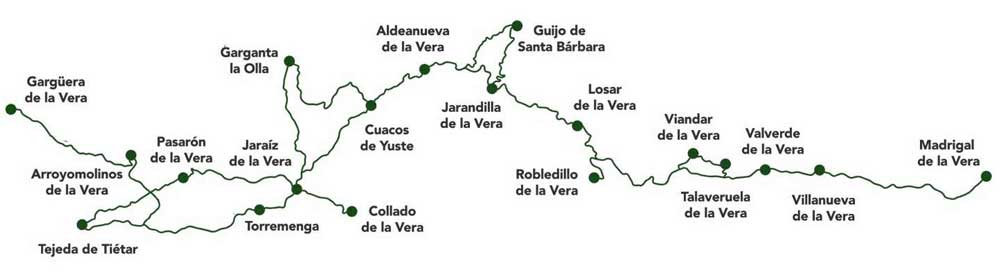

Disfruta de la comarca de La Vera de una forma inteligente. Te ayudaremos a planificar tu viaje para que sea un éxito. Podemos contarte todos los secretos de un pueblo en concreto.
Indicarte dónde ir si vienes con amigos, en pareja o en familia. Cómo aprovechar al máximo tu viaje si sólo dispones de un fin de semana o por dónde empezar si tienes toda una semana.
Qué sitios son los ideales para disfrutar de las piscinas naturales o las mejores rutas de senderismo o bicicleta.
Somos expertos en la comarca de la Vera.
Lo último de lo último. La información más actualizada sobre la comarca de la Vera para que no te pierdas nada.
No solo hemos recopilado todo lo que necesitas saber sobre la comarca de la Vera. Si no que además seguimos trabajando para mantenerlo al día, con las últimas novedades.
MAPA DE LA VERA

Todo lo que necesitas saber si vienes a la Vera.
Te ayudamos a descubrir la comarca de la Vera y a planificar tu viaje para que sea un éxito.
Qué ver, qué hacer, cuándo ir, cómo ir, cuánto costará y por qué visitar. Todas las respuestas que estás buscando están aquí.
Aprovecha al máximo tus vacaciones. Consulta nuestras guías turísticas pueblo a pueblo. Consulta nuestras guías para visitar la Vera en cada una de las estaciones del año.
Te ayudaremos a diseñar un viaje que sorprenda a tu pareja, tu familia o tus amigos. Tenemos las mejores actividades que puedes realizar en la Vera.
Los mejores paraísos, los mejores rincones, restaurantes, museos, bares, fiestas y discotecas. El ocio, la cultura y la naturaleza de la Vera a un click.